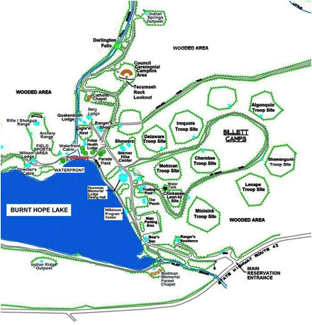

A weekend in the great outdoors. What could be more fun for a group of Webelos Scouts and their parents? It is a chance for adventure, for growth, and for parents to spend quality time with their sons. The outdoor program is an important part of the Scouting program. For the experienced Scout leader planning a Webelos weekend trip is no problem. The logistics of meals, campsite, campfire, and program are done with little effort. Now what about the rest of us? This guide is for those who could use some help. It provides a plan for a fall or spring Webelos weekend camp out at Forestburg Scout Reservation.
The first decision in planning a camping trip is where to go. The location depends on a number of factors. How far do you want to travel? What type of facilities do you need? Do you want a well developed camp site or a wilderness outpost? How many people are going? What are the skills of the Scouts and their leaders? For Webelos Scouts we can make some basic assumptions. The Scouts will have limited skills and equipment so a wilderness outpost is probably not a good idea. A cabin in a well developed camp that has a fire ring and latrines might be an attractive facility. Forestburg Scout Reservation (FSR) is an attractive facility for a Webelos camp out.
Forestburg is the home of Monmouth Council’s Boy Scout resident summer camp. It is located about three hours from Monmouth County just outside of Port Jervis, NY. The camp offers both cabins and wooded sites. Another important aspect is the type of activities available. FSR has many trails for hiking and a lake for fishing. There is even a waterfall on the property. There are plenty of open spaces for activities. At night the sky is dark making it a good place for astronomy. With all this it makes it easy to design a memorable program. Another attraction of FSR is this is a chance to expose the Webelos to what a Boy Scout summer camp will be like. This can help them when they transition to Boy Scouts.
Another important decision is how long. At a minimum you want to have at least one night. While a typical Boy Scout overnight will be two nights one night should be sufficient for Webelos. If the trip starts early Saturday morning and ends before lunch on Sunday that provides plenty of time. You can always plan on a stop for lunch on the way home if you need to.
Forestburg offers a variety of possibilities from cabins to lean-to’s to tent sites. You can always put a tent up for those that need it for the Outdoorsman pin. Let’s start with cabins. There are a number of cabins all with either propane or wood stoves. One good choice is Wilkinson lodge located right on the lake, see attached map. It has two rooms with spring cots for 22 people. Water is available at the pump house across from the dining hall. The closest latrine is behind the trading post.
The cabin has bunks that consist of a set of springs. These springs are not compatible with air mattresses. Put a foam pad on top of that and it you can get a good night’s sleep. That assumes of course that no one snores too loudly, always a concern on a Scout trip. The cabin has two rooms. The adults can sleep in one room and the Webelos in the other.
Another choice if you don’t have a lot of tents but would like to sleep out is the Chickasaw lean-to site. It holds up to 24 people in four lean-to’s so you can spread out. The site is the first one up the hill behind the dining hall. This site will have its own latrine and a campfire ring.
All of the sites in camp are at least a few minute walk from the parking lot. The ranger does not usually allow cars to drive to the cabins. So bringing a rolling cooler and a small wagon is a good idea. The wagon will also help when its time to get water.
For both sites wood is readily available around the camp. The ranger can also sell you cut and split wood if you don’t want to be bothered. One thing you can not do is bring your own wood. There are issues with bugs in the wood. However, your camp outs are probably going to be in the fall or spring and probably all you will need for heat is a pot of hot water, some hot chocolate mix, soup, and coffee. Both sites have at least one picnic table but you might want to bring some chairs.
The first activity in the campout is to check in with the camp masters or ranger. They will walk you through the site and check all the equipment. They can also show you were to get a half barrel, fire buckets, ash bucket and shovel. They will collect any outstanding fees. Make sure to have a copy of the roster of all adults and Scouts attending. You should also have copies of everyone’s medical form.
Next the Webelos and their parents will arrive and set up camp. Each Scout should show what gear they plan to use for the trip. This is for requirement 1 of the Outdoorsman pin. Each Scout should set up their gear in either the cabin or if they brought it in their tent. Everyone should pitch in and get all the common gear set up. This would include the kitchen gear and getting all the food to the site.
Once camp is set up we need to review safety and general rules. For example the buddy system, Scouts should never go anywhere by themselves. They must always be with a buddy. This includes the latrine in the middle of the night. Also, what’s the procedure for people leaving the camp site? As the leader you need to know where everyone is. How do you want to handle if someone does not want to be part of the group activities? Also, any other safety rules should be reviewed. Things like handling hot pots, fires, sanitation, etc.
One important issue is that camp is very big, over 1200 acres. The developed part of camp is only a small piece of the overall property. It can be pretty easy to take a wrong turn or miss a turn and suddenly find yourself walking in the wilderness. So make sure that everyone knows the limits of where they can go with a buddy. You might want to print out some camp maps from the website to give to the adults. The map in this document only covers less than half of camp and is not to scale.
One activity you can introduce at this time is a scavenger hunt that happens over the entire weekend. Make a list of things such as leaves, bugs, feathers, pieces of bark etc that the Scouts have to find during the entire weekend. You might even want to add something like candy wrappers. One Scout gets extra points for the most wrappers.
The first activity is centered on fire building. Have Scouts collect some firewood. They should only collect wood that is already fallen. Talk about how to determine green vs. dry wood. They should only collect wood that can be broken by hand. Review the three types of fuel used in a fire and the different types of fires. Make sure to cover the log cabin that you will build for tonight’s campfire. Discuss fire safety as required for Outdoorsman requirement 7. Note the leader might want to bring some dryer lint for tinder.
After this it is time for lunch. Two Scouts should organize lunch under the supervision of an adult. The rest of the Scouts can work on getting water, and filling the fire buckets.
The afternoon’s first activity is a hike around camp. The Forestburg Heritage Trail takes you around camp and provides a nice introduction to all the buildings around camp and some camp history. At each stop along the trail the Scouts have to find some information. Attached are the questionnaires and the answer key. If you want all the Scouts who complete the trail can buy a medal recognizing the activity. The medals can be ordered at council from the Order of the Arrow (OA). The trail includes a stop at Darlington Falls a highlight of camp. If the weather is warm enough you can go wading at the base of the falls. This requires appropriate adult supervision.
Before going on the hike the leader should review with the boys what they should bring on the hike. Check for boots, appropriate clothing, water, etc. Along the hike you can identify plants and trees and look for animals.
After the hike the Scouts will be tired. So this is a good time to go over the three basic knots; square knot, two half hitches, and the taunt line hitch. If someone has a tarp you can show the boys how each of these knots can be used to put up the tarp. You can also use this time to go over other Scout skills such as First Aid. One fun thing is to teach the various ways of carrying an injured Scout. You can break the group up into teams and they can have races.
After all these activities some free time is a good idea. Bring a football, soccer ball or a Frisbee. The boys can also go fishing in the lake.
It is now time to start dinner. See the Food section for some pointers. There should be two boys as cooks and two boys for clean up. All the other boys and adults should be working on getting firewood for the campfire.
After dinner and clean up it is time to get ready for the camp fire. The boys should be working on their skits, stories, and songs. This is something they could be working on at the den meetings in advance. The adults should be building the camp fire in the fire ring. The camp fire usually uses a tepee type of fire built inside a log cabin. Make sure to use lots of tinder and kindling. Good fire starters are things like dryer lint or a small candle. Make sure you enough wood before the fire is lit and that it has been broken up. All the wood can be less than an inch in diameter so no saws or axes are needed.
During the camp fire everyone should have a chance to perform. The adults can also participate by telling stories or leading a song. During or after the camp fire you might want to have some snacks. Keep the snacks simple so that there is not a lot of clean up required. For example, cookies, apples, or even pudding.
At the end of the camp fire one important thing is to make sure that the camp fire is out and that all the coals are cool. Use the water from the fire buckets and then stir the coals. There should be nothing glowing or smoking when you are done.
By 10 pm everyone should be ready for bed. Make sure to review the buddy system for the latrines and what time is everyone getting up in the morning. The real issue here is at what time they can start making noise. There is nothing worse than being woken up by some kids who start playing around early in the morning when you want to sleep.
On Sunday morning rise and shine is at 7:00 am. The cooks and his assistant should start breakfast by 7:30. Clean up starts at 8:30. Once people are done with breakfast clean up they can start packing up their gear. They can put it back in the car but leave a day pack out with water and anything else they need for the rest of the morning. When the cabin is emptied it needs to be swept. The area around the cabin needs to be checked for trash. If the ashes need to be shoveled out that should be done as well. Once the area is completely ready it can be inspected by the camp master. This has to be done before you leave to get your deposit back.
By 9:30 everyone should be ready for another activity. This might be a good time to review the Leave no Trace principles. Discuss how the campsites and facilities at Forestburg are high impact areas. How would the camp be different if it had followed the Leave No Trace principles? Another option would be to do a small conservation project. Check with the ranger the week before and he will find an appropriate project. This might take up the next hour or so.
Around 10:00 take a walk along one of the trails and work on tree and plant identification. Bring a book for identifications. This can help with some of the Forester pin requirements.
By 11:00 everyone should be ready to go.
As discussed previously this weekend camp out will start on Saturday morning and end before lunch on Sunday. That implies that we need to plan lunch, dinner, and breakfast. In addition, we will probably want to have a snack after the camp fire. Before we go into possible menus there is an important question to consider. How involved should the Webelos be? There are three options; the Webelos do nothing because all the food is prepared in advance and at most it just needs to be heated, the Webelos do very little because the adults do most of the work, or the Webelos help do the cooking and help with the clean up. While the choices are up to trip leader the Webelos will get the most out of the last option.
Before we go into specific menus there a few things to consider. The first is food allergies, which can be severe. The most common allergy is peanuts, followed by lactose intolerance, and shellfish. The next concern is dietary restrictions such as kosher, halal or vegan. You need to check with the participants before planning the menu.
Let’s begin with lunch. The easiest lunch is nothing more than sandwiches, some fruit, and a drink. This works great in the spring while in the fall you can add some Raman instant noodles or hot chocolate for something warm. Two Webelos can set up a simple buffet line and be responsible for making sure everyone gets something to eat. They can also make sure that any trash is cleaned up right away.
So what do we need for lunch? For sandwiches a good estimate is about a quarter of a pound of meat or cheese per sandwich and an average of 1.5 sandwiches per person. That provides an estimate for how many loaves of bread to get. Sliced bread is easier than rolls unless they are pre-sliced. It is also cheaper. It is usually a good idea to get at least two types of meats such as turkey and bologna. For fruit a big bag of apples always disappears quickly. Any unused apples can be used for a snack later in the afternoon or after dinner. If you really want, one or two cookies can be added. Just provide portion control. If you are going to do hot chocolate get the individual packets and some hot cups. This means you just have to heat up some water. And if you are going to do the soup some plastic spoons are needed.
For drinks everyone should have a water bottle so there is no need for cups except maybe for the hot chocolate. If you use napkins as plates and maybe a plastic knife for mayo there should be no dishes to wash which is always a good thing.
For dinner the menu will depend on what you have to cook on. For example, what if you don’t have a stove? Then you might use a charcoal fire in a half barrel or in the fire ring. In that case you could barbeque and do foil wrapped potatoes in the coals. If you want to do something more adventurous you can do a chicken or salmon in foil. Just take defrosted meat, add some seasonings and wrap it up in a piece of foil. Make sure the foil is very tight by folding the edges over multiple times.
A variant on this is the classic pocket stew. Dice up stew meat, potatoes, carrots, onions and any other vegetables you want into small pieces. Take 15” piece of heavy duty foil and fold in half. Now fold the two edges over multiple times to make a pocket. Fill the pocket with the ingredients and the fold the top edge to seal the pocket. Put the pockets right into the hot goals and cook. Each person can make their own pocket. The exact cooking time will depend on the size of the pocket and the heat of the fire. You can eat right out the pocket so no plates required.
If you have a propane stove there are many options. The simplest thing is to get a griddle and make some type of chicken. Make sure the chicken is fully defrosted before you get to camp. A typical dinner might be salad, chicken, carrot sticks, dinner rolls, butter, and some drink mix. The salad and carrots will require no preparation if you buy them pre-cut. You might want to add some shredded mozzarella cheese and sauce and make chicken parmigiana.
In this menu the Webelos can help grill the chicken. The quantities for this menu are listed in Appendix 2.
Other options if you have a big pot might be spaghetti and meatballs. If you have some pans you can do tacos. However, both of these require more clean up. Whatever you do just keep it simple. The Webelos will have more fun if they can get involved.
After dinner the evening activity is a camp fire. This is a time for songs, skits, stories, and showmanship. It can also be a time for roasting marshmallows, smores, and some hot chocolate if it’s cold. Other snacks could be cookies, puddings, and any left over apples. If you want to get the griddle dirty you can even do pizzas on an English muffin or bagel. You need to use a piece of foil over the top to keep the heat in.
After a good night’s sleep everyone likes a nice breakfast. Again the choices will depend on what cooking gear you have. If you do not have a stove then it’s probably a cold breakfast or if you can at least make hot water there is always oatmeal or eggs in a bag. If you have a stove and a griddle then the choices are wide open. Eggs, pancakes, French toast are all possible. Before you buy that bacon check you dietary requirements and think about grease. Bacon grease is no fun to clean up. Another choice might be heat and serve beef patties.
Another thing to think about is clean up. To eliminate utensils you can make an egg sandwich. Start by heating up the brown and serve patties and put them in a foil pocket to stay warm. Make fried eggs on the grill. Open up an English muffin and put on the eggs a patty and a piece of cheese. Plan on about one and half to two sandwiches per person.
There are two major things to remember about meal planning. Always plan on hungry people, you can always bring home any extras. And always think about the details do not forget the condiments, dressings, or some other small thing. So given the menu discussed above Appendix 2 shows what will we need for a group of 4 Webelos and 4 adults.
After each meal the kitchen area and any dirty dishes need to be cleaned up. Any left over food will attract animals. It is no fun to find a skunk or raccoon having their dinner under your picnic table when you want to sit there. Let’s start with trash. Any leftover food should be put in a cooler that latches. The trash should get collected and placed in the dumpsters at the end of the day. No trash should be left in the cabin overnight. Also, no one should have any food or trash in their tents. I like to keep any extra food in the car.
Now the dishes. One thought is that you will use paper or plastic and have very little to wash. Note however please do not bring foam plates and cups. They take up lots of space in the trash and if they blow away they make a big mess. The other thought is that everyone will bring utensils and a plate. Either way you still have to wash any utensils used in cooking. The accepted practice for washing dishes is to have three buckets. These are usually are the rectangular basins that are only a few inches deep. The first bucket has hot water and a dime sized drop of liquid soap. The second bucket has warm rinse water. The third bucket has water with a drop of bleach or a sanitizing tablet. You wash everything in the first bucket, rinse in the second and then dip in the third. One key thing is that you try not to cross contaminate water from one bucket to the next. Usually one person washes and a different person rinses and sanitizes. Let the dishes air dry and you are good to go. So we need the following supplies in addition to a way to boil water.
Buckets: 3
Liquid Soap
Bleach
Scrubbing Pad
Usually the cooking gear is washed first and then everyone washes their own personal gear. After everything is washed it is just left on the table to air dry.
Now when you are all done with the dishes the first bucket might contain some food particles. So you do not want to dump this water near your campsite as it will attract animals. So go at least 50’ away and then dump the buckets. Even better is to dump the water through a piece of screen and then throw away the captured food particles.
The most common cooking equipment for a weekend camping trip is the classic propane “Coleman” stove. The stove uses either a small propane cylinder or a larger tank used for a barbeque grill. Just make sure that you have the correct hoses and fittings to match the gas source and the stove. Note that liquid fuels are not allowed in camp.
For the actual cooking a large pot with a lid for boiling water and a griddle are needed. You will also need a ladle, spatula, hot gloves, and matches.
For the pocket stews you need a bag of charcoal and a half barrel or a fire ring. The half barrel can be obtained from the Ranger. You will also need to get two large buckets from the Ranger. These are fire buckets and should be filled with water before the fire is lit. There may also be a bucket for the ashes.
One other piece of cooking equipment is a container for water. This is typically a five gallon jug. For a typical weekend trip you might bring two containers. These containers should seal so that the water stays clean. These containers can be find at most outdoor stores for less than $10 each.
Appendix 3 has a list of gear that each person should bring. In terms of clothing the key is to have clothes that are appropriate for the weather. If it is going to be cold then you want to dress in layers so that you can adjust the clothing to the level of activity. No matter what the weather everyone should bring a spare set of clothes in case they get wet or stained.
On important issue is boots. While most of the camp trails are well defined the grass can be damp and sneakers will just soak up the moisture. Walking around in wet shoes and socks is not pleasant. A pair of boots will prevent wet and possibly cold feet. This is also a reason why bringing extra socks is a must.
Another important issue is rain gear. While no one plans on having it rain it might. Just because it rains it does not mean that the activities will not go on. Also it may rain during an activity. Therefore, everyone should bring some type of rain gear. A rain jacket and pants is best but a poncho will work. The problem with a poncho is that the rain can get underneath it.
Everyone should have a day pack to carry their water bottle, Webelos handbook, some toilet paper, and maybe their rain gear.
All of the personal gear should fit in a back pack that can be carried in from the parking lot.
One last issue about accommodations is sleeping bags. Many adults and Webelos will have some type of sleeping bag. If you expect the weather to be chilly you might want to remind the parents that not all sleeping bags are created equally. If they think it is not going to be warm enough they can send along an extra blanket to put inside or heavier pajamas. By the same token for a spring camp out you want to make sure no one brought a sleeping bag rated for 0 degrees and then wonders why they are hot all night.
Now what about if they do not have a foam pad and a sleeping bag? No problem, just bring some cardboard and a blanket. The trick is to fold the blanket in half and sleep inside it. You need to have some insulation both under and over you.
We have already discussed the gear needed for cooking and clean up. Some additional gear that might be needed includes toilet paper, first aid kit, camera, and lanterns.
For the activities a variety of gear will be needed depending on what you choose to do. In general you want to bring ropes, field book, and plant identification books. For the campfire you might bring a song book, book of skits or stories.
A key thing is to work through the entire schedule and review what materials will be required.
The key to a successful camp out is planning. A good plan means that you know what you are going to do when and that you have all the materials required. It also means that you have backup plans in case the weather or the Scouts do not cooperate. Think about what you will do if the weather turns bad. How will you work in the Scout who wants to come late or one who needs to leave early?
One last comment, this guide was designed to help your camp out planning. It is not a substitute for the training class Outdoor Leader Skills for Webelos Leaders. Also, remember to use your resources. If you have a Den Chief he can be a great help and may be able to help you borrow gear from his Boy Scout Troop. Look through the Webelos book for other activities. The Boy Scout hand book has examples of knots, and first aid skills. The Field book or a nature guides can help with plant and animal identification. For details on cabins and directions to camp see www.fsrcamp.org.
The most import thing is to remember that the real goal of a Scout event is fun with a purpose.

Saturday
9:00 am Leader arrives and checks in with camp masters
10:00 am Scouts and parents arrive. Set up camp
11:00 am Collect wood and review fire building
12:00 pm Lunch
1:00 pm Heritage Trail
3:00 pm Scout skills
4:00 pm Free time, fishing
5:00 pm Dinner
6:30 pm Clean up
7:00 pm Prepare for camp fire/free time
8:00 pm Campfire
10:00 pm Lights Out
Sunday
7:00 am Rise and shine
7:30 am Breakfast
8:30 am Clean up, pack up
9:30 am Leave No Trace discussion
10:00 am Plant and tree identification
11:00 am Depart
Lunch
Cold cuts: 1 lb. turkey, 1 lb. ham, 1 lb. bologna
Cheese: 32 individual wrapped slices
Bread: 2 loaves family sized.
Condiments: Mayo, mustard in squeezable containers
Napkins: One large package
Apples: 5 lb bag
Water: 2 Gallons
Drink Mix: Optional
Raman Noodles (for fall): 8
Spoons (For the soup): 8
Large Garbage bag
Dinner: Chicken Parmigiana, salad.
Skinless Chicken breasts: about 3 lbs. Make sure they will be defrosted by dinner
Carrot sticks or baby carrots: Medium bag
Salad Pre-Cut: Large bag
Mozzarella Cheese: Shredded 12 oz
Pasta Sauce: Small Jar
Bread or Rolls: As desired
Butter: Two sticks
Aluminum Foil: One roll
Water: 2 Gallons
Drink Mix: Optional
Spoons:
Plates:
Large Garbage Bag
Propane Stove and Gas Supply
Griddle
Hot Gloves
Spatula for chicken
Napkins:
Cutting board: As required
Sharp knife: As required
If the chicken pieces are thick cut them in half to make thinner pieces. Grill the chicken on both sides until done. Put in a foil pocket until all the pieces are done. After all the chicken is done you need to melt the cheese and heat the sauce. One way is put the chicken back on the grill. Sprinkle with cheese and pour on some sauce. Cover the entire grill with a large piece of foil. Serve when hot. If you want the sauce to be warmer you can always use a small pot to heat it up.
Breakfast: Egg Sandwiches
Eggs: 18
English Muffins: 16
Beef Heat and Serve Breakfast Patties: 16
Cheese Slices: 16
Foil: As needed
Spatula:
Butter or non-stick spray
Coffee: Brew in the cup never instant.
Hot Chocolate (Optional)
Milk: Half Gallon
Napkins
Large Garbage Bag
Cups
Sugar
Tea (if anyone wants it)
On the griddle cook patties until they are browned. Put them aside in a foil pocket. Make individual fried eggs. On each English muffin put one egg, one patty and a slice of cheese. Note that this is an easy meal to clean up. There should only be the griddle, spatula, and a few cups. If you boil enough water then you will have hot water for both the coffee and the clean up.
Sleeping bag or blanket
Foam Pad or Air Mattress if in tent
Cardboard for bunks
Tent (Optional)
Pillow
Flashlight
Boots
Socks
Underwear
Pajamas
Extra shirt, pants or shorts depending on weather
Hat type depends on weather
Gloves if needed
Jacket type depends on weather
Sneakers
Plate
Cup
Utensils: knife, fork, spoon
Water Bottle
Day Pack for hike
Rain gear
Soap
Small Towel
Toothbrush
Toothpaste
Toilet Paper
Watch
Webelos Handbook
Do not bring:
Electronics of any type
Knife
Expensive jewelry
|
FORESTBURG HERITAGE TRAIL |
| Sponsored by Na Tsi Hi Lodge Monmouth Council | |
Visit the sites described below and you will be able to answer all the questions.
Like a treasure hunt, the treasure at the end of the trail is Knowledge. Oh yes, you
will also earn a Trail Medal! When you have answered all the questions, return
this form to your Scoutmaster. He can turn in this form with payment to the OA
Camp Chief. The trail is roughly 1.75 miles long. Allow an hour to hike the trail.
Since Forestburg uses the buddy system, you must hike the trail with a buddy.
Medal Earned By: _________________________________________
and _________________________________________
Approved by (Scoutmaster or designee):
Signature: _________________________ Troop: ________ Date: _________________
Blockhouse & Stockade: A log blockhouse and stockade stand at the entrance to Forestburg Scout Reservation. The blockhouse was given in memory of Lt (JG) John Simon Mark USN and built by Troop 50.
Question: What year was the blockhouse built?
Answer: _________
The Forestburg emblem, which you see on the stockade, was designed by J. Fred Billett. The emblem is also used for Monmouth Council. Mr. Billett was the Scout Executive when Forestburg was built and was the first Camp Director. Mr. Billett also founded Quail Hill Scout Reservation and built the Oakhurst Service Center. Later in his Scouting career he was the Region 1 Director and the second-in-command at the National BSA office. In 2001, Central Camp was renamed J. Fred Billett Camp in his honor.
Protestant Chapel: The Bodman Memorial Forest Chapel was built in 1968.
Question: If you sight from the pulpit to the cross, what structure is in your line of sight?
Answer: ____________________________
One of five outpost shelters is located clockwise (east) around the lake from this chapel. The outposts were built to encourage troops to hike around the 1,200-acre property.
Question: What is the name of this outpost shelter? (Hint: You can use the camp map.)
Answer: ______________________________
Question: What are the names of the four other outpost shelters?
Answer: __________________________________________________________________________________
Forestburg Welcome Center: This building was erected in 2008 and serves as the camp office. Inside the building is a lounge for Scout Leaders – The Bear’s Den. The Bear’s Den is named in honor of Thomas “Bear” Fraley.
Question: How many years was “Bear” the Camp Director? Answer: _________
Wilkinson Lodge: The original purpose and informal name of Wilkinson Lodge and the similar, but smaller, building it replaced was “The Boathouse” because the Central Camp canvas canoes and wooden rowboats were stored here. Wilkinson Lodge was also known as Wilkinson Program Center in the 1970s and 1980s when it served as the camp office.
Question: What year was Wilkinson Lodge built? Answer: __________
Commissioner’s Lodge: This lodge is one of the buildings surviving from the time before Monmouth Council purchased the property that became Forestburg. Originally the property was a summer camp for families. The lodge now provides housing for the camp commissioners and the chaplain.
Question: How many doors are on the front of the building? Answer: __________
Technology Center: This is another original building, however, it was only half the size of the current building. The owners of the Steinbach department store in Asbury Park enlarged the building and converted it into a trading post that served camp until 2007.
Question: What animal is carved on the top of the Tech Center totem pole? Answer:_____________________
The storage building across the road from the dining hall was originally a family cabin. (Of course, in those days the windows were not covered!) There were several of these cabins in the camp. Some still survive as utility buildings.
Dining Hall: When Monmouth Council purchased the Darlington estate, there was already a small dining hall standing at this location. However, the council leaders realized that it was insufficient for the many Scouts who would be attending camp here, so a new, larger building was erected. The roof trusses were recycled from a chapel at Fort Monmouth that was razed. (It is said that this is the reason the dining hall is shaped like a cross.) The dining hall is named in honor of the man who was the council President 1925-1930 and who bequeathed money to build the council’s camps. His portrait hangs in the dining hall.
Question: What is the official name of the dining hall?
Answer: _______________________________________________________
In the early 1960s, one of the most influential leaders of the council carved from a white pine log two totem poles that were placed in front of the dining hall. He was the first “life member” of Na Tsi Hi Lodge and was a Ranger at Camp Housman (which is now part of Allaire State Park, NJ). There is a photograph of him in his Native American regalia in the front of the building.
Question: What was his name? Answer: ______________________________________________
The first pair of totem poles were covered with fiberglass in the 1970s to extend their life. By the end of the 20th century they had completely rotted away and were removed. To replace them, two new totem poles which match the originals were carved by Herb Kaasmann of Atlantic Highlands.
The sign over the entrance to the kitchen reads Dave’s Philmont Kitchen. Read the story behind this sign for the answer to this question.
Question: What is a core value of Scouting? (Hint: The G___ T___)
Answer: ________________________________________
Question: On what date was Forestburg purchased? Answer: _____________________
Question: What was the first year Forestburg was operated as a summer camp by Monmouth Council?
Answer: _______________
Question: On what date was Forestburg dedicated? Answer: _________________________
Billett Parade Field: The commissioner staff of the Chingarora District constructed the parade field and center flagpole. Chingarora District served the northwestern part of Monmouth County until the merger with Great Northern District that created the Twin Lights District.
Question: On what date was the parade field dedicated? Answer: ________________________
Scoutcraft / Frontier Camp: The Scoutcraft building is officially the Sterner Hike Center, named in honor of its donor, E. Donald Sterner of Belmar. As the Council President, Mr. Sterner worked closely with J. Fred Billett for many years. It was built in 1966 replacing a smaller Scoutcraft “shack”.
Catholic Chapel: The Catholic chapel is officially named Our Lady of Hope. The name “Hope” is taken from the name of the lake, Burnt Hope Lake. This name comes from the name of the Hope Lumber Company that owned all of this land many years ago. The “Burnt” part of the name derives from the fact that there were several forest fires in the area.
Question: On what date was the chapel dedicated? Answer: ________________________
Darlington Falls: The Forestburg property was purchased from Florence Darlington for $78,000. She owned it with her late husband Dr. Thomas Darlington, who was a health commissioner for the State of New York. It was her wish that some part of the camp would be named in his memory, and so our beautiful waterfall is named Darlington Falls. Visits to Darlington Falls must be accompanied by an adult.
Tecumseh Rock: Tecumseh Rock is named after the brilliant Shawnee warrior and orator who attempted to rally various Native American tribes. Hundreds of council fires have been held at the base of Tecumseh Rock.
PLEASE DO NOT ENTER THE STAFF AREA OR BERG LODGE WHILE SUMMER CAMP IS IN SESSION!
Berg Lodge: Berg Lodge is the camp staff headquarters. It is an original camp building that dates from the time the Darlington family owned the property. It was renovated with a donation from the family of George Phillip Berg, who was a staff member in 1967 and 1968. Berg was a Chief Warrant Officer and helicopter pilot. He was killed in Vietnam on February 18, 1971 on a mission to retrieve an American patrol. His remains could not be retrieved and so he is considered Missing in Action.
Down the hill from Berg Lodge are two new buildings in camp, Eagle’s Nest and Quakenbush Lodge. They are named in honor of two volunteers who made a great impact on the scouts of Monmouth Council: Dennis “Eagle” Wood and Alice Quakenbush.
Thunderbird District Scouters Memorial: On the road in front of Pollak Lodge, a tree was planted to honor the memory of veteran Scouters from the Thunderbird District. Six Scouters are named on the plaque.
Question: How many years (combined) were they in Scouting? What is the average?
Answer: total = ________ average = ________
Pollak Lodge: Pollak Lodge replaced the original camp headquarters, known as Darlington Lodge or Lush Lodge. The original building was a large, 2 story building that housed the camp office, infirmary, library, Scoutmaster lounge, and staff quarters. This building burned down in the early1970s. The present building serves as the camp trading post and health facility. A plaque inside the trading post recognizes a donation made in 1960 for the original camp headquarters which stood on this site.
Question: Who is the donor recognized on the plaque? Answer: ______________________________
Jewish Chapel: The Jewish Chapel was dedicated on July 28, 1968 in honor of Harry Feldt of Fair Haven, a veteran Scouter. In 2002 it was rededicated in the memory of 1st Lt. Howard Jon Schnabolk who was an Eagle Scout from Troop 58, Oceanport. He was a helicopter pilot in Vietnam and was killed in action on August 3, 1967.
Question: Which Scout Law is mentioned on the plaque?
Answer: A SCOUT IS _____________________
Onondaga Campsite: The flagpole in the Onondaga campsite was erected in memory of Stephen J. Fiorelli, an Assistant Scoutmaster in Troop 66. The plaque contains the words “We will always remember... W.T.C. 9/11/01.”
Question: This plaque references what historic event?
Answer: __________________________________________________________________________________
Dan Beard Camp / Todd Lodge: Beginning in 1958, troops could camp at Dan Beard Camp, but they had to haul all their food from the dining hall at Central (Billett) Camp because there were no permanent buildings at Dan Beard. A pair of scouts from each troop would paddle a canoe from their campsite to the Boathouse (Wilkinson Lodge) to get their food each day. This explains why the traditional symbol of Dan Beard Camp was a scout in a canoe.
The A-frame building is Todd Lodge. Todd Lodge is named for the member of the council board who donated it, E. Murray Todd. This building serves as the headquarters for the Dan Beard Camp. Read the plaques on the front of the lodge, climb the steps and walk to the lakeside-end of the building to enter. Find a photograph of Dan Beard inside the lodge.
Question: Who was Dan Beard? Answer: ______________________________________________________
Question: What year were the buildings at Dan Beard Camp built? Answer: _______________
Question: The Dan Beard camps were made possible by E. Murray Todd and the Bodman Foundation to teach Scouts...what?
Answer: _________________________________________________________
Climbing Tower: The family of a young Eagle Scout and Vigil Honor OA member donated the climbing tower in 2003 in his memory.
Question: What was his name? Answer: ____________________________________________
End of the Trail
This completes the Forestburg Heritage Trail. We hope you have learned a little about the history of this great camp and learned about some of the people whose dedication continues to create so many memories for so many scouts for so many years.

[ CONFIDENTIAL – FOR USE BY SCOUTMASTERS ]
FORESTBURG HERITAGE TRAIL
ANSWER KEY
SCOUTMASTER: Please score the trail forms yourself. Anyone (youth/adult) may earn the medal. Turn in the forms at the Billett Trading Post to purchase the Trail Medals.
Question: What year was the blockhouse built?
Answer: 1957
Question: If you sight from the pulpit to the cross, what is in your line of sight?
Answer: Todd Lodge
Question: What is the name of this outpost shelter?
Answer: Indian Ridge
Question: What are the names of the four other outpost shelters?
Answer: Jim King, Indian Springs, Hemlock Pond, Hunter’s Point
Question: How many years was “Bear” the Camp Director?
Answer: 17 years
Question: What year was Wilkinson Lodge built?
Answer: 1965
Question: How many doors are on the front of the building?
Answer: 6
Question: What animal is carved on the top of the Tech Center totem pole?
Answer: Owl
Question: What is the official name of the dining hall?
Answer: Housman Memorial Lodge
Question: What was his name?
Answer: Thomas “Chief Grey Fox” Morley
Question: What is a core value of Scouting?
Answer: Good Turn
Question: On what date was Forestburg purchased?
Answer: May 18, 1956
Question: What was the first year Forestburg was operated as a summer camp by Monmouth Council?
Answer: 1956
Question: On what date was Forestburg dedicated?
Answer: August 7, 1958
Question: On what date was the parade field dedicated?
Answer: August 1, 1959
Question: On what date was the chapel dedicated?
Answer: July 4, 1962
Question: How many years (combined) were they in Scouting? What is the average?
Answer: total = 268, average = 44.7
Question: Who is the donor recognized on the plaque?
Answer: Joseph Lush
Question: Which Scout Law is mentioned on the plaque?
Answer: A SCOUT IS BRAVE
Question: This plaque references what historic event?
Answer: The terrorist attack and destruction of the World Trade Center on September 11, 2001
Question: Who was Dan Beard?
Answer: Dan Beard was one of the Founders of the BSA.
Question: What year were the buildings at Dan Beard Camp built?
Answer: 1966
Question: The Dan Beard camps were made possible by E. Murray Todd and the Bodman Foundation to teach Scouts… what?
Answer: Self Reliance
Question: What was his name?
Answer: Jerry V. Ceres III
 FORESTBURG HERITAGE TRAIL
FORESTBURG HERITAGE TRAIL
Sponsored by Na Tsi Hi Lodge Monmouth Council
ORDER FORM
Scoutmaster – Complete this form and submit with payment to the OA Camp Chief by Friday.
Approved by (Scoutmaster or designee):
Name _________________________________ Troop _____________
Signature ______________________________ Date ______________
Number of medals = ___________ @ $7 each = _______________________
Make checks payable to Monmouth Council BSA
Office Use Only
____________________________ _____________________________ _________________
Camp Chief Signature Date
Payment Received